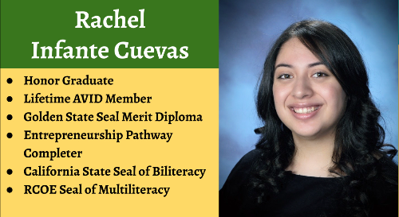
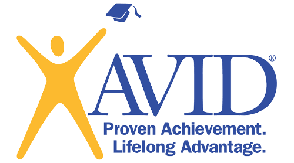
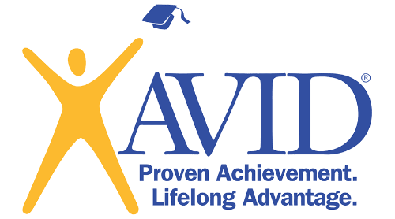

Rachel Infante Cuevas
Hello! My name is Rachel Infante Cuevas, and I am a Sociology major at the University of California, Riverside. I am currently in my second year at UCR, and I will be completing the spring quarter soon. Throughout my time at university, I have developed a deep interest in understanding the dynamics of human interactions and societal structures, which led me to choose sociology as my major.
After earning my Bachelor's degree, my plan is to pursue a career in Human Resources. I aim to start as a Human Resource Assistant and work my way up to the position of Human Resource Manager. This field aligns perfectly with my passion for understanding and supporting individuals within organizations. Having a positive work environment is just the foundation for a thriving company.
It is evident that my professional experience may be limited due to the privilege of being able to focus solely on my education without the need for employment. However, I deeply appreciate and value this privilege, and I do not take it for granted. This unique circumstance has allowed me to dedicate my time and energy to my studies, which has resulted in enhanced educational opportunities and the ability to fully invest in my academic pursuits.
By immersing myself in my coursework, I have honed my critical thinking skills, developed a strong work ethic, and gained valuable insights into the field of sociology. While my employment history may be limited, I am confident that my dedication to academic excellence and my genuine passion for sociology will enable me to excel in my future career in Human Resources. I am eager to transfer the skills and knowledge I have acquired throughout my educational journey into the professional realm, contributing to the success and well-being of individuals within organizations.
I am a highly passionate and dedicated student who thrives on the opportunity to showcase my talents and capabilities. If given a task or project, I have the ability to create a well-thought-out plan and execute it with precision and excellence. I am constantly seeking new challenges and opportunities to expand my knowledge and skills, and I approach each endeavor with enthusiasm and a willingness to learn. I have a strong work ethic and a driven attitude, which allows me to tackle projects that others may approach with hesitation. I am confident that I will not only meet your expectations but also exceed them.
In conclusion, as a Sociology major at the University of California, Riverside, I have developed a profound understanding of human interactions and societal structures. Despite my limited professional work experience, I do not doubt my abilities. I am confident in my ability to excel in the field of Human Resources, leveraging my dedication to academic excellence and genuine passion for sociology. I am a highly motivated and diligent student, always seeking new challenges to expand my knowledge and skills. With a strong work ethic and a driven attitude, I am ready to exceed expectations and contribute to the success and well-being of individuals within organizations.
Experience
Lifetime AVID Member
• Advancemnet Via Individual Determination
• Member for all middle and high school career
Seal of Multiliteracy
• Proficient in more than one language
• English and Spanish
Education
University of California Riverside
Portfolio



